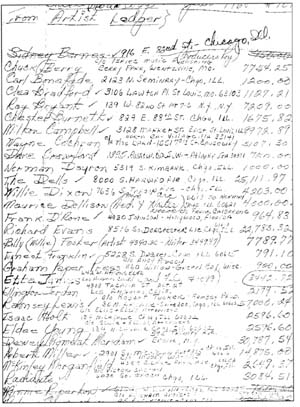

Гонорарная ведомость, составленная для налоговой инспекции. Среди прочих - имена Чака Берри, Хаулин Вулфа, Литл Милтона Кэмпбэлла, Уилли Диксона, Этты Джеймс, Мадди Уотерса... Любопытно, что самые крупные гонорары у Ричарда Иванса и ЗЕ ДЕЛЛС - этих имен давно никто не помнит.